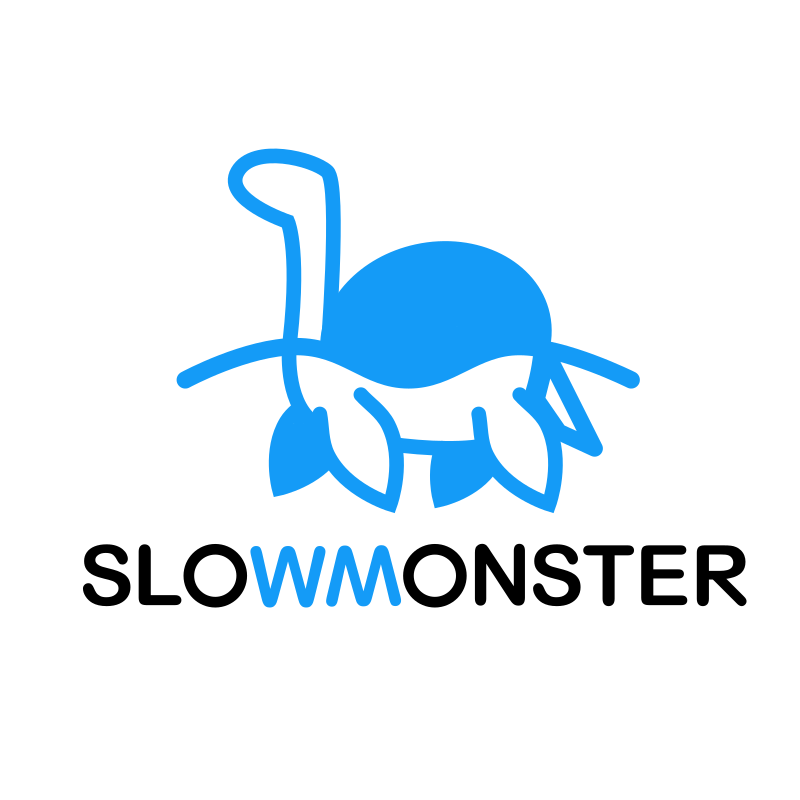

Oduvijek me zanimao dizajn, bilo to u umjetnosti, arhitekturi ili jednostavnim filmskim plakatima. Toliko me to zanimalo da sam zato upisao srednju Školu za Grafiku, Dizajn i Medijsku Produkciju u Zagrebu gdje se nalazi moj trenutni fakultet koji pohađam. U srednjoj sam školi pohađao smjer Web Dizajn gdje sam naučio mnogo stvari bitnih za budući posao kojim se želim baviti. Učio sam kodiranje, dizajn, slikanje, rad na računalima i općenito napredovanje vlastite kreativnosti. Čak sam za završni radio 2D platformersku računalnu igru u programu Unity koja je bila potpuno funkcionalna. Ali, to nisu jedine stvari koje me zanimaju. Oduvijek sam bio jako kreativno raspoložen. Fasciniran sam umjetnošću u bilo kojem obliku, i zato me strašno zanimaju sve stvari koje izlaze iz okvira normalnog. Obožavam filmove, video igre, ali najviše čitanje knjiga. Najdraži žanr knjiga mi je definitivno znanstvena fantastika i fantasy iz pera JRR Tolkiena i GRR Martina, i jedva čekam istražiti koja još velika djela postoje koja me mogu inspirirati kao što su djela njih dvojice.
Osim što me zanima čitanje, zanima me isto tako i pisanje. Volim stvarati priče, bilo da su obične, ili da su znanstvena fantastika ili fantasy. To mi je najdraži hobi. Uz to mi je i hobi dizajniranje što mi je struka. Ali najviše od sveg volim spajati to dvoje gdje mogu stvoriti priču iz dizajna, bilo da se radi o logotipu ili čak o cijeloj web stranici. Programiranje mi nije strano, tako da je i to opcija. Jedan od najdražih priča koje sam stvori pomoću dizajna jest logotip "SlowMonster". Nije mi dugo trebalo dađ ga izradim i izgleda potpuno jednostavno, ali ponekada je i to dovoljno. Logotip priča priču, jasan je i izravan, kakvi dizajni i trebaju biti. Želim u budućnosti raditi na još takvih dizajnova i ne bojim se riskirati s njima. Uz knjige i filmove me također i jako inspirira glazba. Ne bih rekao da je moj ukus u glazbu imalo sličan onome što je trenutno popularno kod većine ljudi. Glazba koju slušam varira između glazbe koja je jako spora i lagana do potpune suprotnosti koja je mračna i jako glasna. Većina žanrova koji me zanimaju su elektroničke vrste, kao što su house, synthwave, dubstep.
Na internetu postoje mnogi sadržaji koji me inspiriraju, i mnogi dolaze sa youtubea. Ovo je link koji vodi na jedan od mojih najdražih kanala koji uči ljude o važnosti dizajna i predstavlja moderne trendove kako bi svi mogli lakše razumjeti što je popularno u današnjem dizajnu.
Link na YouTube video